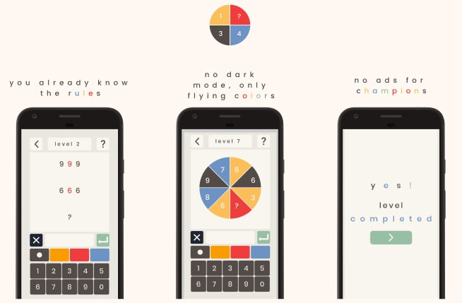

As a side project, I wanted to release a game on my own, s o l v e o, from the first idea to the actual Google store page.
I'm thrilled to say that I've done it!
Coming from a psychology background, I had zero knowledge of software
development.
For my work and personal enjoyment, I decided to learn to code by myself
and enjoying it quite a lot. But apart from doing quick little projects
like this simple web calculator, I always asked myself if I could make more, like
an actual app people would use.
So I went on and designed the game using Figma, from the concept to the actual game, including UI, localization, the puzzles and the hints, really everything!

I chose to code the game in GDscript, the Godot language. I also got familiar in the process with Github and StackOverflow, like, a lot! I also distributed the game on the Play Store, designed the logo and creative assets with implemented ads as well.

By far, the coolest about making a game is choosing how it would look
like! I knew I wanted to make a maths puzzle so after a quick benchmark
and mood-boarding phase, I've discovered that most games of this genre
look either very old-fashioned, with good old skeuomorphism going
rampant or very dark, like matrix kind of dark.
So, I wanted to make a game with a flat, eerie and very
colored UI. Something mini-metroesque, if you see what I mean :)
Also, colors are part of the game, where you have to solve puzzles
using them. Which is, I think, a big differentiator and brings something new to
this genre!
Making the puzzles and the hints were also fun, while very
time-consuming. Finding the best rules and the right balance between too
hard and too easy was laborious, and even with my limited resources for
user testing, I am quite certain the global experience could be
improved. That is one of the things you have to accept!
What would be nice is having some analytics, and a batch of
beta-testers, to see where they would get stuck. Then, re-arrange the
levels in a more "balanced" way. What user testing helped me for, was polishing the UI, the global
understanding of the screens as well as some puzzles that were
not that intuitive.
Fixing bugs was a major pain. I hated it, it
was not fun...At all.
Now I can empathize even more with my fellow
developers! Learning to code, even in GDScript, a language similar to
python which is relatively easy to learn was quite a challenge, but a
fun one! All these aspects like saving and loading files, handling
typography and assets were taken for granted, but now I can make other
games more easily!
Having to make user research without a budget was a challlenge. It is trickier and
if I had more time to allocate to this project, I
would definitely do more observation, as I do in my day job. But this
project, was mostly technical, so I am really happy with how it turned
out.
Realizing that marketing was SUCH a major point of making a game was
a good lesson also. Well, I planned to make a game, next time I will on top of that try
to market it :)
Anyway, thanks for reading! You can download s o l v e o on Google Play here.
Or read
more about my research on video games here.